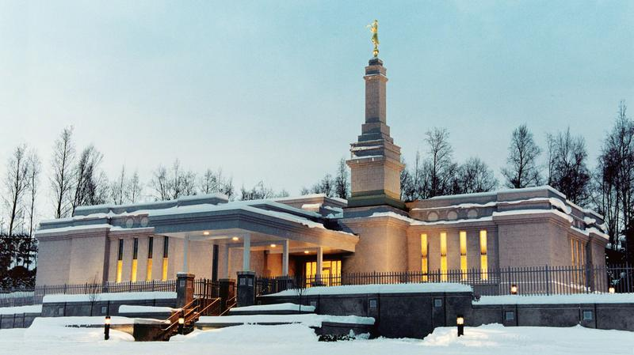
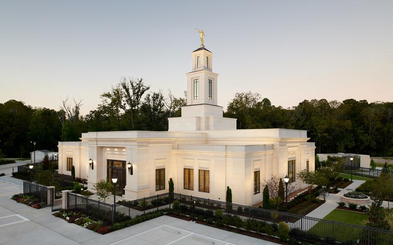
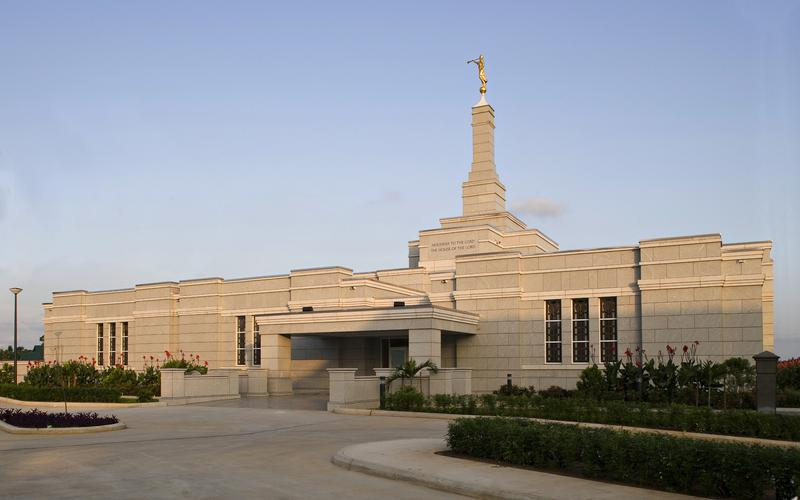

Temple Album
Home
Old
New
Large
Small
Home
Salt Lake Temple

Provo Utah Temple
Washington D.C. Temple
Rome Italy Temple

Manila Philippines Temple
Accra Ghana Temple
Freiberg Germany Temple

Paris France Temple
Johannesburg South Africa Temple